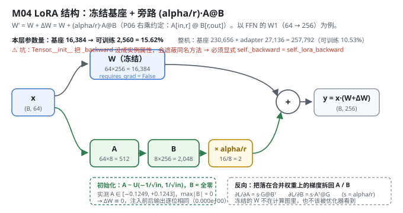
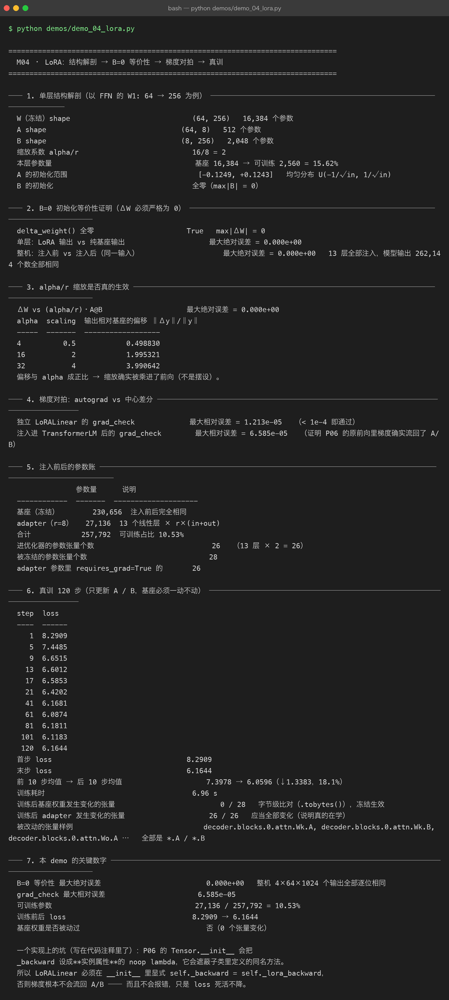

Milestone 04 — LoRA：W' = W + ΔW，以及证明它真的没动基座
M01 说"LoRA 只动 1/8.5 的参数"，但没证明它真的只动了那些参数。M03 定好了只在答案区算 loss。这一层把 LoRA 本身彻底解剖：结构、初始化、梯度、以及冻结是否真的生效。
这一章的方法论是本项目后面所有章节的模板：先证明等价性，再证明梯度对，最后才真训。顺序不能反 —— 如果反向写错了，loss 照样会降，你根本看不出来。
纯 numpy 手写：LoRALinear 同时继承 P06 的 Tensor 与 Module，.data 是一个即时合成的属性（W.data + scaling·A@B），反向靠覆写 _backward 把梯度拆回 A/B。这样 P06 一行都不用改。
1. Why：为什么必须做"等价性证明"
LoRA 要成立，必须满足三件事，缺一件就是自欺欺人：
- B=0 初始化 ⇒ 注入瞬间与基座完全等价。 否则"LoRA 是基座的增量"这个前提就是假的，你没法把训练结果归因于 adapter。
- 反向必须真的流回 A/B。 手写 autograd 最容易在这里静默失败：梯度不回流 → A/B 恒为初值 → loss 死活不降，而且不报错。
- 基座必须一动不动。 "冻结"在本项目里不是一句口号，是字节级比对（
0 / 28个张量变化）。
2. Design：合成权重 + 拆梯度
前向（src/ft/lora.py:150）：
@property
def data(self): # 每次访问重新合成
return self.W.data + self.scaling * (self.A.data @ self.B.data)因为 P06 的前向写死了 linear(x, self.Wq) 这种形态，而 .data 拿到的就是合并后的权重，P06 一行都不用改，前向就自动带上了 LoRA 分支。
反向（:159）： 落在合并权重上的梯度 G = ∂L/∂(W+ΔW)，按链式法则拆回：
∂L/∂A = (alpha/r) · G @ Bᵀ
∂L/∂B = (alpha/r) · Aᵀ @ G初始化： A 取 U(-1/√in, 1/√in) 小随机值，B 全零 —— 这保证第一步的 ΔW ≡ 0。

3. Real-run evidence（来自 demos/out/demo_04_lora_terminal.txt）
真实环境：Python 3.13 | numpy 2.5，基座 230,656 参数，注入 13 个线性层。
3.1 B=0 等价性（实测：逐位相同）
delta_weight() 全零 True max|ΔW| = 0
单层：LoRA 输出 vs 纯基座输出 最大绝对误差 = 0.000e+00
整机：注入前 vs 注入后（同一输入） 最大绝对误差 = 0.000e+00 13 层全部注入，模型输出 262,144 个数全部相同262,144 个输出逐位相同（4×64×1024）。这不是"很接近"，是完全相同 —— B 全零使得 ΔW 严格为 0，浮点上没有任何舍入可谈。
3.2 alpha/r 缩放真的被乘进前向（实测）
ΔW vs (alpha/r)·A@B 最大绝对误差 = 0.000e+00
alpha scaling ‖Δy‖/‖y‖
4 0.5 0.498830
16 2 1.995321
32 4 3.990642偏移与 alpha 成正比（0.5 → 0.4988，2 → 1.9953，4 → 3.9906），证明缩放不是摆设。这一点很重要：很多人把 alpha 当成"另一个要调的旋钮"，实际上它和 lr 是乘性关系（M06 会量化这个耦合）。
3.3 梯度对拍：autograd vs 中心差分（实测）
独立 LoRALinear 的 grad_check 最大相对误差 = 1.213e-05 （< 1e-4 即通过）
注入进 TransformerLM 后的 grad_check 最大相对误差 = 6.585e-05第二行才是关键：它证明 P06 的原前向里梯度确实流回了 A/B（如果没流回，误差会是 100% 量级）。
3.4 参数账（实测）
| 项 | 数量 | 说明 |
|---|---|---|
| 基座（冻结） | 230,656 | 注入前后完全相同 |
| adapter（r=8） | 27,136 | 13 个线性层 × r×(in+out) |
| 合计 | 257,792 | 可训练占比 10.53% |
| 进优化器的参数张量 | 26 | 13 层 × 2 |
| 被冻结的参数张量 | 28 |
3.5 真训 120 步（实测：基座 0 个张量被动过）
step 1 8.2909 step 41 6.1681
step 5 7.4485 step 61 6.0874
step 9 6.6515 step 81 6.1811
step 13 6.6012 step 101 6.1183
step 17 6.5853 step 120 6.1644
step 21 6.4202- 首步 8.2909 → 末步 6.1644；前 10 步均值 → 后 10 步均值 7.3978 → 6.0596（↓1.3383，18.1%）；耗时 6.96 s。
- 训练后基座权重发生变化的张量：0 / 28（字节级
.tobytes()比对）—— 冻结生效。 - 训练后 adapter 发生变化的张量：26 / 26 —— 全部是
*.A/*.B，说明真的在学。

4. 踩坑 / 反直觉发现
4.1 Tensor.__init__ 把 _backward 设成实例属性 → 静默失败（实测踩过）
这是本项目最危险的一个坑，写在 src/ft/lora.py:140 的注释里：
# ⚠ Tensor.__init__ 会把 ``_backward`` 设成一个实例属性（noop lambda），
# 它会**遮蔽**类里定义的方法。所以必须在这里显式挂回真正的反向实现。
self._backward = self._lora_backwardP06 的 Tensor.__init__ 里有 self._backward = lambda: None。Python 的查找顺序是实例属性 > 类方法，所以哪怕你在 LoRALinear 里定义了 _lora_backward，实例属性那个 noop 也会赢。
后果是静默的：梯度不流回 A/B → A/B 恒为初值 → 而 B 初值是 0，所以 ΔW 恒为 0 → loss 一步都不降，但没有任何报错。grad_check 会全程返回接近 1.0 的相对误差，如果你不看这个数，就会以为"模型在训，只是慢"。
可迁移的经验：手写 autograd 时，任何"没报错但结果不对"的迹象都要先怀疑反向挂上了没有。等价性证明（3.1）与梯度对拍（3.3）必须放在真训之前。
4.2 "冻结"要能被证明，不能只是不传参（实测 0/28）
freeze_base() 做两件事：把所有非 adapter 参数的 requires_grad 置 False（意图显式），以及不把它们交给优化器（真正的冻结）。但光这样还不够 —— 本章额外做了一次字节级比对（.tobytes()）：
训练后基座权重发生变化的张量 0 / 28
训练后 adapter 发生变化的张量 26 / 26这两行同时出现才有说服力：0/28 证明没被误改，26/26 证明 adapter 真的在学（如果两行都是 0，那说明压根没训起来）。
4.3 alpha/r 和 lr 是乘性关系，不是两个独立旋钮（实测）
从 3.2 的表看，alpha 越大偏移越大，几乎严格线性。这意味着调 alpha 和调 lr 在第一步是同一件事（都缩放步长）。M06 的扫描会证实：alpha 的最优值（16，即 alpha/r = 2）与 lr 高度耦合，两个一起调只会互相掩盖。
5. Conclusion
- LoRA 一行公式：
W' = W + (alpha/r)·A@B；A 小随机、B 全零 ⇒ 注入瞬间ΔW ≡ 0。 - B=0 等价性实测
0.000e+00：整机 13 层、262,144 个输出逐位相同。 - 梯度对拍
6.585e-05（注入整机后），证明反向真的流回了 A/B；独立层是1.213e-05。 - 可训练 27,136 / 257,792 = 10.53%；进优化器 26 个张量，冻结 28 个。
- 真训 120 步：loss 8.2909 → 6.1644，基座 0/28 个张量变化、adapter 26/26 变化 —— 冻结与学习同时被证明。
- 最危险的坑：
Tensor.__init__的实例属性_backward会遮蔽子类方法，导致梯度不回流、loss 不降且不报错。 - 手写实现的意义：因为
.data是自己合成的，P06 一行都不用改就拿到了完整 LoRA 前向 + 反向 —— 这是"理解机制"带来的自由度，框架用户拿不到。
6. Code map
| 文件 | 职责 |
|---|---|
src/ft/lora.py | LoRAConfig（r/alpha/dropout/scaling）、LoRALinear（即时合成 .data + _lora_backward 拆梯度 + delta_weight/merged_weight） |
src/ft/inject.py | walk_parameters / inject_lora（把 target 位置的 Parameter 换成 LoRALinear）/ freeze_base / lora_layers / count_parameters |
src/ft/trainer.py | LoRATrainer：只把 A/B 交给 Adam，其余同普通训练循环 |
src/ft/paths.py | enable_deterministic_autograd()：把 P06 的 Tensor._prev 从 set 换成有序 list（见 M07/M09 的可复现性） |
demos/demo_04_lora.py | 7 节：结构解剖 / B=0 等价性 / alpha 缩放 / 梯度对拍 / 参数账 / 真训 120 步 / 关键数字 |
demos/out/demo_04_lora_terminal.txt | 本章所有数字的来源 |
assets/lora.svg | 本章 LoRA 结构图（冻结基座 + 旁路） |
7. Version line
v0.3 → v0.4，M04 LoRA 落地并被证明。实测：B=0 等价性最大绝对误差 0.000e+00（整机 262,144 个输出逐位相同）；grad_check 最大相对误差 6.585e-05；120 步 loss 8.2909 → 6.1644；基座被改动张量 0/28、adapter 26/26。并定位 Tensor.__init__ 实例属性遮蔽 _backward 导致的静默失败。纯 numpy、无 torch/peft。配图 1 张手写 SVG + 1 张真实终端截图。